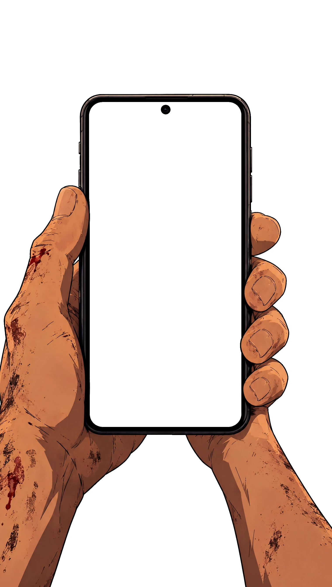
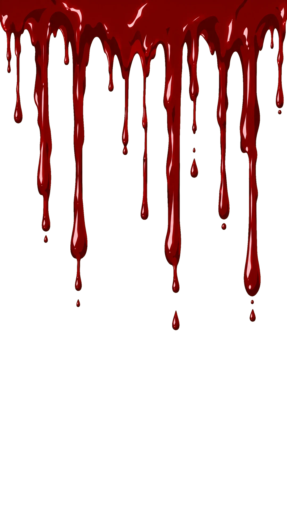

LIVE
0
78%
00:00:00
録画保存 · ESCAPED

KURO
1.2M
READY
1.00x
HISTORY
Betting
Auto
FUN 10.0
BET
FUN 10.0
balance
1,000.00

CRASHED
CLOSE CALL!!
LV.1
THE FOLLOWER
黒 KURO LIVE · 心霊配信
LOADING…
TAP TO START
音声あり · SOUND ON
DEV · next crash
SET
OFF
1.00
1.30
2.00
5.00
12.0
every round
OFF